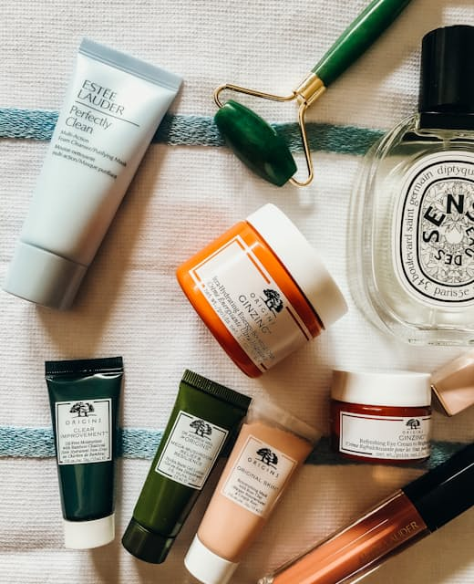

Home / Our story
Every active on the label has a farm we can name.
Ferne started in a Birmingham kitchen in 2021 with one question: why does "natural" skincare so rarely say where anything came from?

We work with six growers across Devon, Perthshire, Provence and the Douro. Each batch is logged, tested and numbered — scan the base of any bottle to see exactly where it came from and when it was pressed.
Four actives, nothing else
Rosehip, oat lipid, olive squalane and sea buckthorn. Everything we make is built from those four, plus the minimum needed to keep it stable. No fragrance, no essential oils, no colour.
Refill first
Every jar and bottle is glass. 92% of repeat customers buy the refill pod instead of a new jar, which is the single biggest reason our packaging footprint fell by half last year.
6Partner farms
0Synthetic fragrance
92%Refill rate
The people
Small team, long relationships
Elin HartFounder & formulator
Dr. Maya ChenConsultant dermatologist
Tom AlderSourcing & growers
Nadia ReyesCustomer care